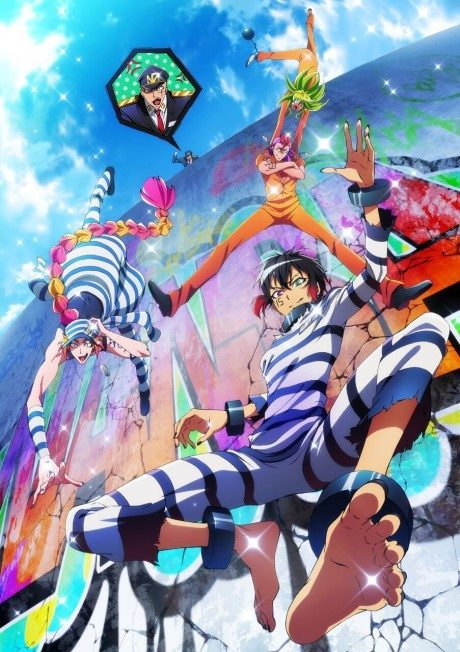

Anime
Manga
NANBAKA
ナンバカ
After the anime, read the manga from Chapter 95.
7.1AniList
—Animeter
25 ep2 seasons
Anime finished. Where does the manga pick up?
Start at Chapter95
After both anime parts, pick up the manga at Chapter 95.